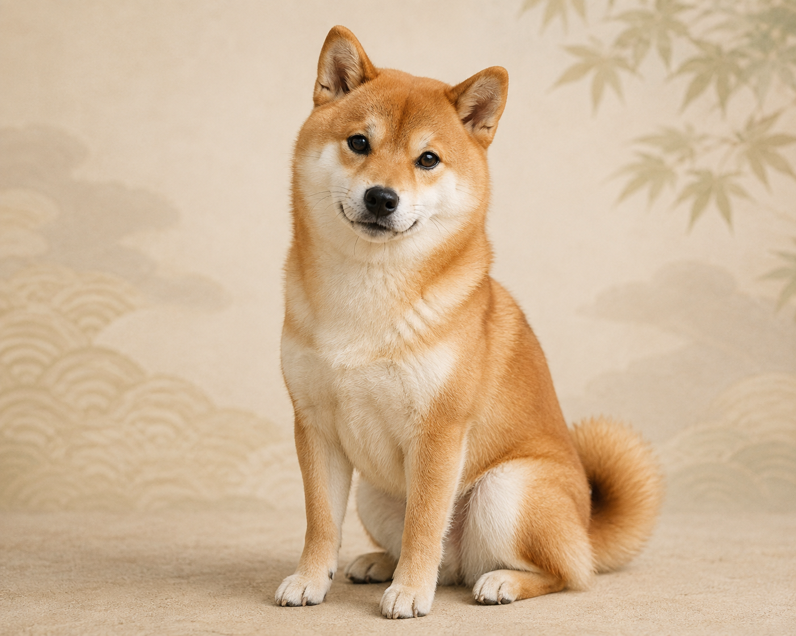
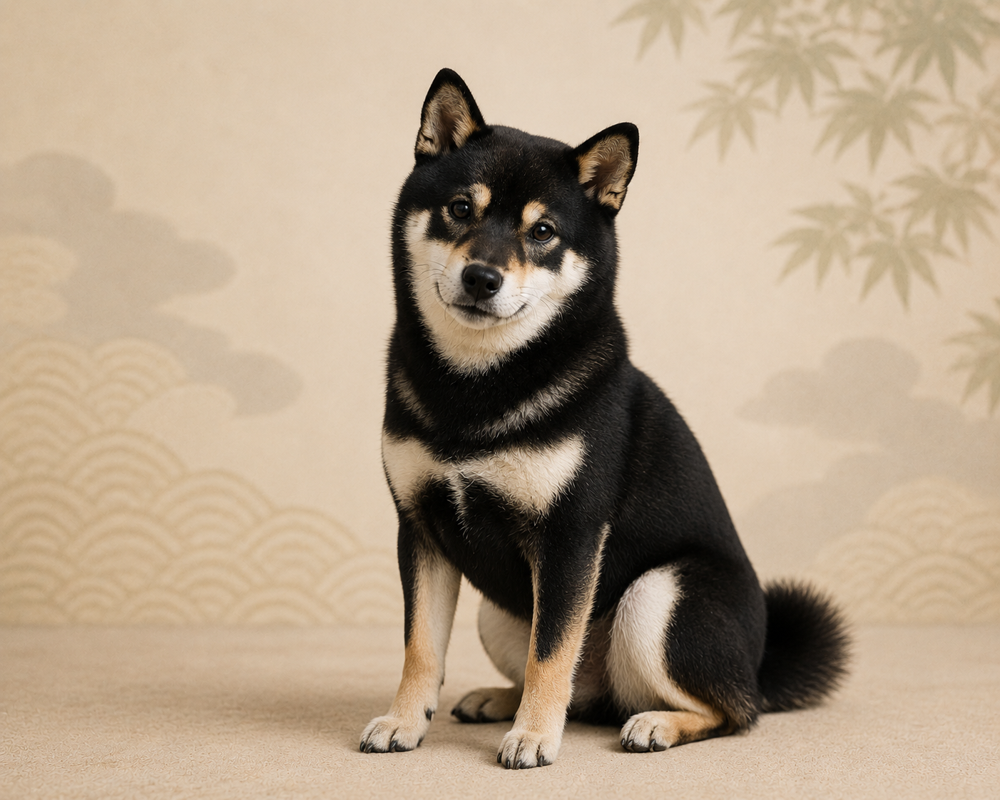
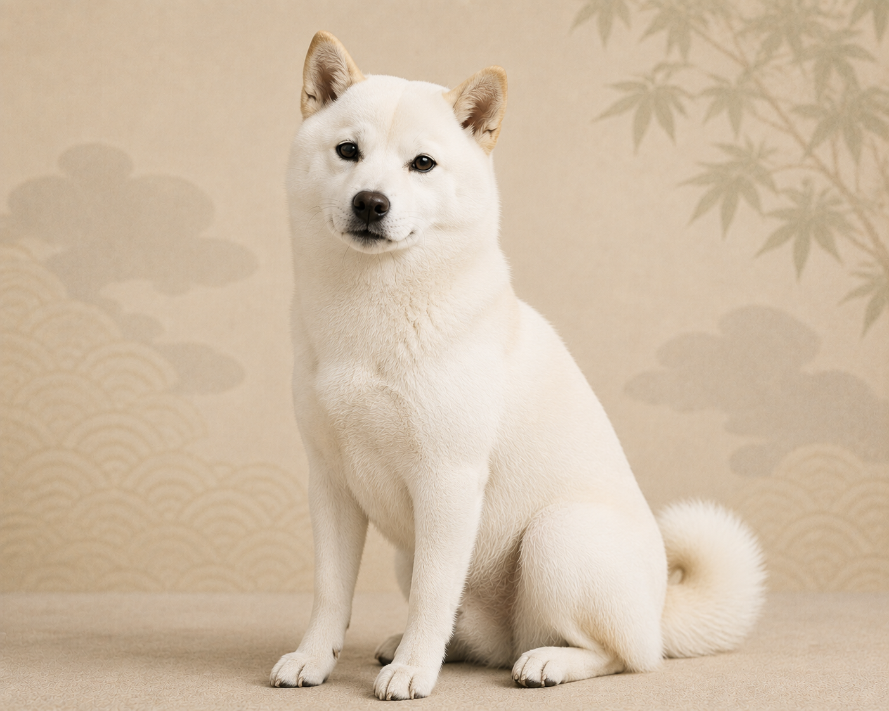
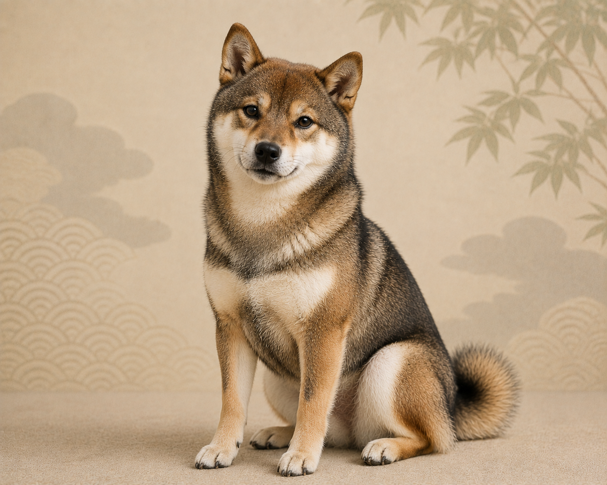
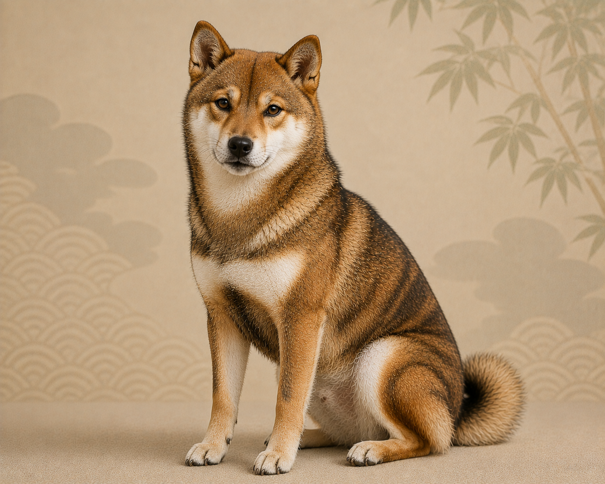

柴犬ってどんな犬？
柴犬の性格について
柴犬の性格は自立心が高く、疑い深い性格ですごく賢い犬種です。
そのため賢過ぎるあまりに「ずる」賢かったり、人間になったかのような仕草が多く、みているだけで面白可愛い犬種です。
柴犬の人間化
柴犬を飼っていると「犬を飼っている」というより、「もしかして、中に人間が入っているのでは…？」と思ってしまう瞬間はありませんか？
一般的な図鑑に載っている「忠実」や「勇敢」といった言葉だけでは、柴犬の本当の姿は語れません。
実体験を元に柴犬の性格について「３つ」に絞って紹介します。
① 綺麗なフル無視
気持ちよさそうに寝ている時にちょっと触ったり、いたずらで構ったりしても、わざわざ起きて逃げるような無駄な体力は使いません。「フゥー…」と深いため息をひとつついて、目線すら合わせずに完全無視します（笑）。
怒るわけでも逃げるわけでもなく、「今その相手をするメリットはない」と冷静に判断する、大人のスルー技術が備わっています。
② 謎の時計と無言の圧
散歩やご飯の時間が1分でも遅れると、吠えて訴えてくるわけではなく、目の前にドサッと座り込んで無言の圧をかけてきます。
どこに時計があるのか、じーっとこちらを睨みつけ、目が合うと「ハァ……」と深いため息をしてきます。言葉を出さずとも、「おい、早くしろよ、忘れてないだろうな？」というセリフが部屋中に響き渡るような、目での会話術を持っています。
③ 都合の良い柴犬
シャンプーや病院など、自分にとって都合の状況を察知した瞬間、急に「何も聞こえていません」という演技に入ります。急に自分の足を熱心に食べ始めたり、窓の外をものすごく真剣に見つめたりして、「今、めちゃくちゃ忙しいんで無理です」というオーラを全身から放ちます。
実際には音は聞いてはいるが、話は聴いてはいない、便利なノイズキャンセリング機能が備わっています。
豆知識
実は柴犬の毛は５種類あります。主に赤柴が生まれますが、稀に黒、白、胡麻、虎柄も生まれます。
胡麻と虎柄は似ている上、虎柄に関しては正式に名前がなく、ブリンドルと言ったりするそうです。
しかし、なぜ柴犬の色はこんなにも種類があるのでしょうか？

赤柴

黒柴

白柴

胡麻柴

虎毛
柴犬の毛は色関係なく、一本いっぽん毛を見てみると赤、黒、白と3色入っています。
そのため毛の色は、どの色が一番外側に配色されるかで犬の毛色は変わるのです。